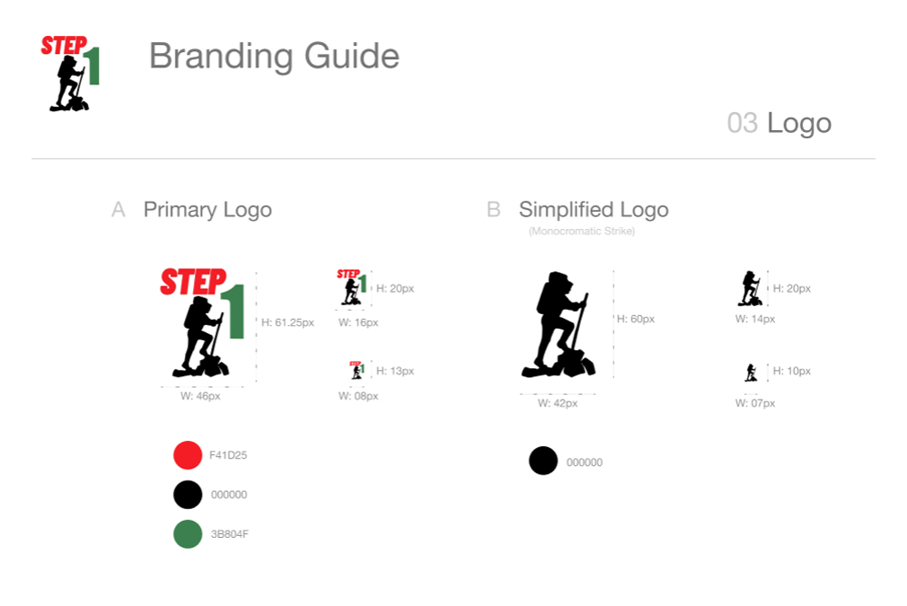

The client wanted to enter the cloud storage market, and sought the development of a mobile software application that contained the following features:
The hike planning app market is a surprisingly crowded one, with well over a dozen competitiors vying for market share. However, the top three were in a class by themselves. Hiking Project (backed by the outdoor retailer REI) leads the pack with fast searches, simple maps, offline map support, and an excellent trailhead finder feature.
The hike planning app market is a surprisingly crowded one, with well over a dozen competitiors vying for market share.
However, the top three were in a class by themselves. Hiking Project (backed
by the outdoor retailer REI) leads the
pack with fast searches, simple maps,
offline map
support, and an excellent
trailhead finder feature.
Nonetheless, I was surprised to find a lack of some very valuable features, such as: whether there is water or bathrooms at the trailhead; what the trail difficulty is and whether it is advisable for kids and/or dogs; current weather info was not included, nor are weather or other safety alerts.
Nonetheless, I was surprised to find a lack of some very valuable features, such as whether there is water or bathrooms at the trailhead; what the trail difficulty is and whether it is advisable for kids and/or dogs; current weather info was not included, nor are weather or other safety alerts. I later learned that of my survey participants, only 32% of those planning hikes with their phones were using a current hike planning app.
Users want to know what features are available on which trails… frustrating to plan hikes without knowing the quality of the trail, trail views, time needed for hike, or current fitness level requirements.
In 2018 approximately 93 million Americans went outside to hike, backpack, mountain climb, and camp.
Outdoor enthusiasts want to explore nature and experience life to the fullest, and they will spend nearly $290 billion in the pursuit.*
In 2018 approximately 93 million Americans will get outside to hike, backpack, mountain climb, and camp.
Outdoor enthusiasts want to explore nature and experience life to the fullest, and they will spend nearly $290 billion in the pursuit.*
Potential users of our app are planning hikes with their phones, but the majority are not using a hike planning app to assist with that planning… the market is there.
* http://www.activenetworkrewards.com/Assets/AMG+2009/Outdoors.pdf
Moodboard
Logo Ideation Sketching
Branding Guide
The name is designed to invoke hiking “steps” as well as planning “steps”. In other words, the first step in a great hike is a great hike plan… so use the tool Step 1!
Taking the logo designing from sketching into software phase, I found myself intuitively moving towards a visual representation of hiking which was initially represented by the standard oversimplified hiker icon.
A major challenge learned during the process… what renders well small on a smartphone?
Again, I relied heavily on imagery associated with hiking. In my designs, I’m particularly referencing hiking maps and wayfinding signs used by the US National Park Service.
There are four primary channels of the app’s Site Map: Planning, Saving Lists & Reviews, User Account, and the Help option. This design meets all of the client's needs.
There are four primary channels of the app’s Site Map: Planning, Saving Lists & Reviews, User Account, and the Help option. This design meets all of the client’s needs.
You’ll note that the Planning channel (highlighted in light yellow on the left) breaks into two channels: Research Trails vs. Browsing Trails.
This issue wound up impacting my UX later in the process when I created a Home Screen and decided to represent this Plan Hike element with two different buttons, instead of one.
Feature Include:
Searchable or browsable database
(via specific location or desired trail features)
Organizing content through sorting options
Creating content
(through user reviews)
Uploading files from a computer or mobile device by adding user photos
Collaboration between users via review averages (crowd- sourcing)
Searchable or browsable database
(via specific location or desired trail
features)
Detailed hiking data not found in most other hiking
applications (like
driving directions to trailhead, or curent
weather conditions)
Uploading files from a computer or mobile device by adding user photos
Creating content (through user reviews)
Collaboration between users (via review averages (crowd-sourcing)
Organizing content through sorting options
Again, despite being a crowded market, the research indicates that the need for better hike planning tools exists. If enough value-added options can be built into a new application, while retaining the strengths of the top competitors, the opportunity to quickly capture market share is ripe.
Also, since the market for hiking and related outdoor gear is also strong, the app can be cross-branded and/or create major revenue streams from outdoor gear advertisers.
$290
Billion
Also, since the market for hiking and related outdoor gear is also strong, the app can be cross-branded and/or create major revenue streams from outdoor gear advertisers.
For example, a partnership with an established outdoor gear player (Timberland hiking boots, Solomon trail shoes, or Suburaru sport utility vehicles) could help to leverage a dominance over the hike planning application field. As stated earlier, outdoor enthusiasts will spend nearly $290 billion in the pursuit of their interests. If we could secure $0.01 from 1/10 of that market, we’d be generating $290 million.